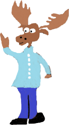
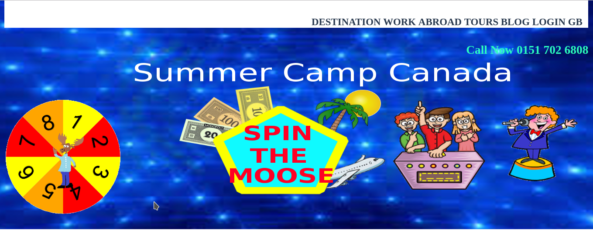

Spim the moose was a project set by Smaller Earth/ Cleaversteam to create an interactive game to help advertise summer camps in Canada. The game would work by allowing the users to click on a button to spin the moose in the wheel and then a prize will appear. To get to the prize the user will need to enter their details to prevent any cheating or the top prize being wasted. The prizes themselves are determined by a random generator which would work out the prize boundary and at the same time take into consideration the weightings of the prize.
The research carried out within the project was desk research with the aim to make the design have the sense of a game show. To start with research was carried out on similar game show banners to see how to advertise prize and show players within the design. Once this was done the next step was to carry out research into cartoon moose to be able to design my own moose during the design stage. The last stage was to carry out research into smaller earth website to see if there are any common styling and information which needs to be on the banner at the top of the page.

There were three design stages within this project, which all went through both high and low fidelity pro-typing. The first one designed was the background image for the banner which also includes making sure the information collected from smaller earth website fits in with the background image. The second design stage was to create the wheel by making sure the colours stand out on top of the background image. The third stage was to design the moose by first drawing the moose by hand before scanning the moose into the computer. Once scanned in the moose edited to include colour and an outline to make the moose stand out.

As the high fidelity makes all individual element ready to put straight into the code, the development by building up layer so each element can be placed in the correct position. Once all elements were on the page the next step was to make sure spin the moose was responsive before the Javascript was coded. Once the spin the moose was changed to become responsive the next step was to create the Javascript file to be able to work out the prize, angle the moose has to move and make different elements appear like the form and prize. The code was then ready to be tested.
The first test carried out was manual testing to make sure each element of the design works and the Javascript runs effectively before user testing was carried out. User testing was used to make sure the user understood how to play the game and to collect feedback on the project for further improvement.